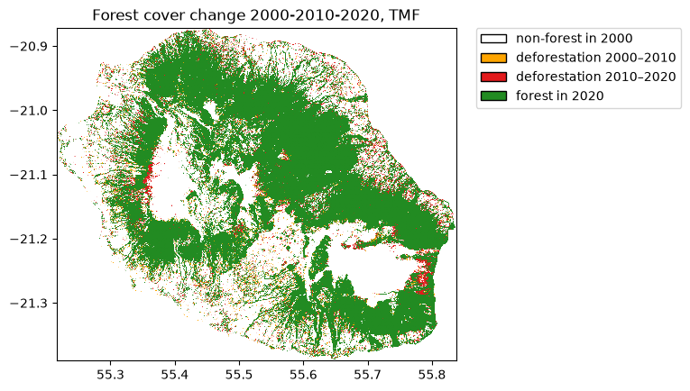
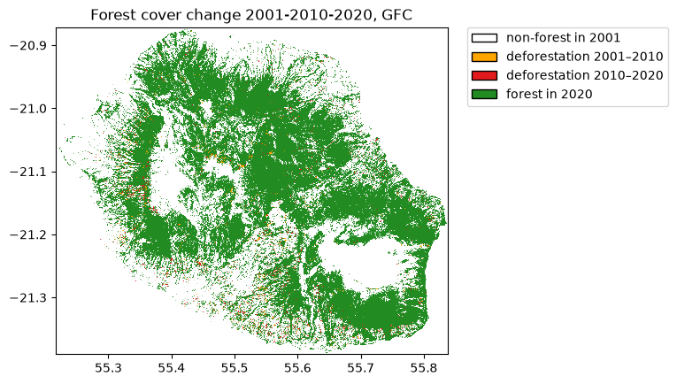
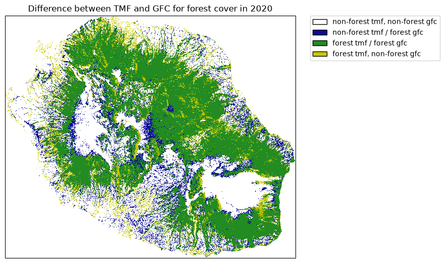
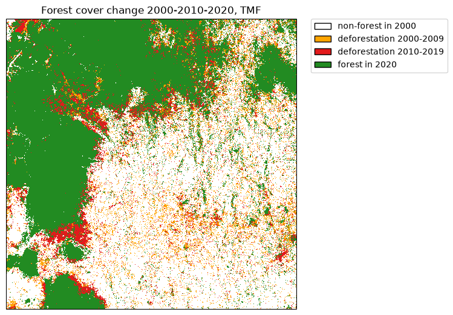

Get started¶
Get forest cover change from TMF¶
The function .get_fcc_loss() can be used to download forest cover change
from the Tropical Moist Forest product. We will use the Reunion Island
(isocode “REU”) as a case study.
from pathlib import Path
import ee
import geefcc
import rioxarray
# Initialize GEE
ee.Initialize(project="deforisk", opt_url="https://earthengine-highvolume.googleapis.com")
# Download data from GEE
out_dir = Path("out_tmf")
forest_file = out_dir / "forest_tmf.tif"
if not ofile.is_file():
geefcc.get_fcc_loss(
aoi="REU",
years=[2000, 2010, 2020],
source="tmf",
parallel=False,
crop_to_aoi=True,
tile_size=0.5,
output_file=forest_file,
)
We transform the forest raster with three bands into a single-band forest cover change raster.
fcc_file = out_dir / "fcc_tmf.tif"
if not fcc_file.is_file():
geefcc.sum_raster_bands(
input_file=forest_file,
output_file=fcc_file,
verbose=False,
)
We plot the forest cover change map.
# Plot
years = [2000, 2010, 2020]
geefcc.plot_fcc_loss(
input_file=fcc_file,
years=years,
output_file="tmf.png",
title="Forest cover change 2000-2010-2020, TMF",
dpi=100,
)
{kind=link}

Compare with forest cover change from GFC¶
# Get data from GEE
out_dir_gfc = Path("out_gfc_50")
ofile_gfc = out_dir_gfc / "forest_gfc_50.tif"
if not ofile_gfc.is_file():
geefcc.get_fcc_loss(
aoi="REU",
years=[2001, 2010, 2020], # Here, first year must be 2001 (1st Jan)
source="gfc",
perc=50,
parallel=False,
crop_to_aoi=True,
tile_size=0.5,
output_file=ofile_gfc,
)
# Sum bands to get a single-band fcc raster
fcc_file_gfc = out_dir_gfc / "fcc_gfc_50.tif"
if not fcc_file_gfc.is_file():
geefcc.sum_raster_bands(
input_file=ofile_gfc,
output_file=fcc_file_gfc,
verbose=False,
)
# Plot
years_gfc = [2001, 2010, 2020]
geefcc.plot_fcc_loss(
input_file=fcc_file_gfc,
years=years_gfc,
output_file="gfc.png",
title="Forest cover change 2001-2010-2020, GFC",
dpi=100,
)
{kind=link}

Comparing forest cover in 2020 between TMF and GFC¶
import matplotlib.patches as mpatches
import matplotlib.pyplot as plt
from matplotlib.colors import ListedColormap
# Computing difference and sum
forest_tmf = rioxarray.open_rasterio(ofile)
forest_gfc = rioxarray.open_rasterio(ofile_gfc)
forest_diff = forest_tmf.sel(band=3) - forest_gfc.sel(band=3)
forest_sum = forest_tmf.sel(band=3) + forest_gfc.sel(band=3)
forest_diff = forest_diff.where(forest_sum != 0, -2)
# Colors
cols=[(10, 10, 150, 255), (34, 139, 34, 255), (200, 200, 0, 255)]
colors = [(1, 1, 1, 0)] # transparent white for -2
cmax = 255.0
for col in cols:
col_class = tuple([i / cmax for i in col])
colors.append(col_class)
color_map = ListedColormap(colors)
# Labels
labels = {0: "non-forest tmf, non-forest gfc", 1: "non-forest tmf / forest gfc",
2: "forest tmf / forest gfc", 3: "forest tmf, non-forest gfc"}
patches = [mpatches.Patch(facecolor=col, edgecolor="black",
label=labels[i]) for (i, col) in enumerate(colors)]
# Plot
fig = plt.figure()
ax = plt.subplot(111)
ds = forest_diff.squeeze()
nrow, ncol = ds.shape
xmin = float(ds.x.min())
xmax = float(ds.x.max())
ymin = float(ds.y.min())
ymax = float(ds.y.max())
xres = (xmax - xmin) / (ncol - 1)
yres = (ymax - ymin) / (nrow - 1)
extent = [xmin - xres / 2, xmax + xres / 2,
ymin - yres / 2, ymax + yres / 2]
ax.imshow(ds.values, cmap=color_map, extent=extent, resample=False)
ax.set_aspect("equal")
plt.title("Difference between TMF and GFC for forest cover in 2020")
plt.legend(handles=patches, bbox_to_anchor=(1.05, 1), loc=2, borderaxespad=0.)
fig.savefig("comp.png", bbox_inches="tight", dpi=100)
plt.close(fig)
{kind=link}

Differences are quite important between the two data-sets. This might change depending on the tree cover threshold (here = 75%) we select for defining forest with the GFC dataset.
Download data from an extent¶
We will use the following extent which corresponds to a region around the Analamazaotra special reserve in Madagascar.
out_dir_mdg = Path("out_tmf_extent")
ofile_mdg = out_dir_mdg / "forest_tmf_extent.tif"
if not ofile_mdg.is_file():
geefcc.get_fcc_loss(
aoi=(48.4, -19.0, 48.6, -18.8),
years=[2000, 2010, 2020],
source="tmf",
tile_size=0.2,
output_file=ofile_mdg,
)
get_fcc running, 4 tiles .....
# Sum bands to get a single-band fcc raster
fcc_file_mdg = out_dir_mdg / "fcc_tmf_extent.tif"
if not fcc_file_mdg.is_file():
geefcc.sum_raster_bands(
input_file=ofile_mdg,
output_file=fcc_file_mdg,
verbose=False,
)
# Plot
geefcc.plot_fcc_loss(
input_file=fcc_file_mdg,
years=[2000, 2010, 2020],
output_file="extent.png",
title="Forest cover change 2000-2010-2020, TMF",
dpi=100,
)
{kind=link}
